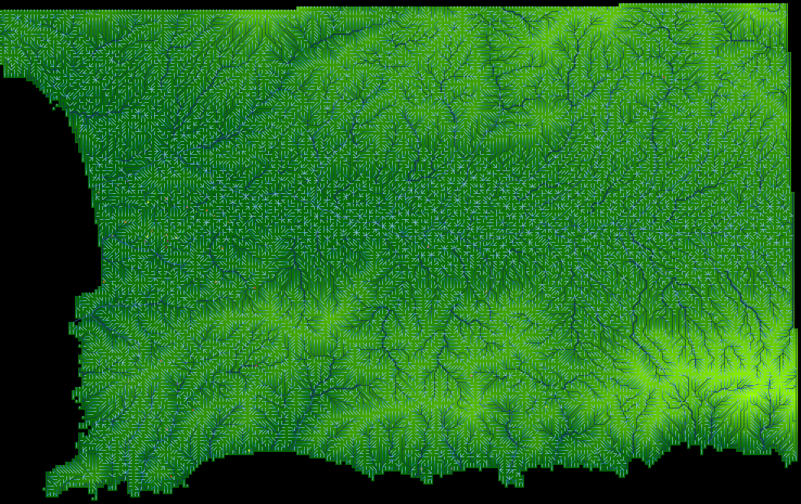
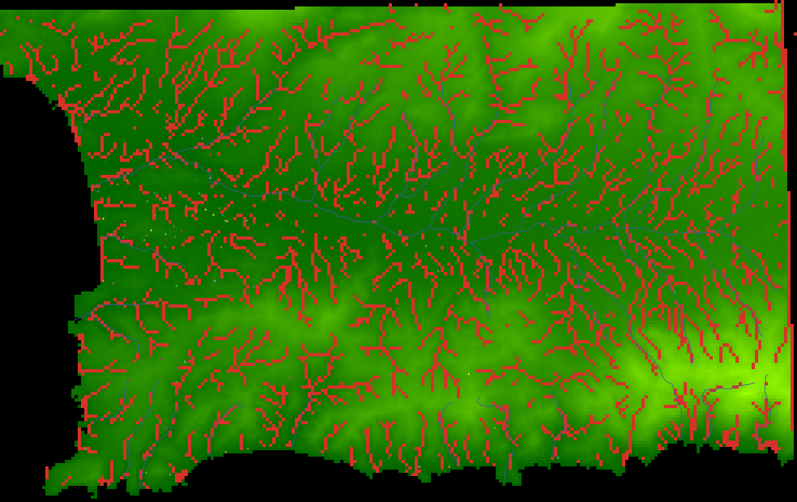
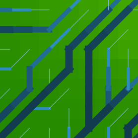
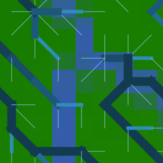
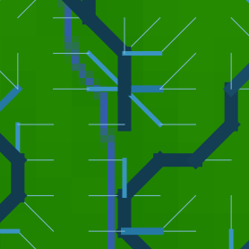
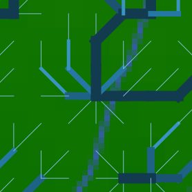
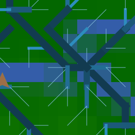
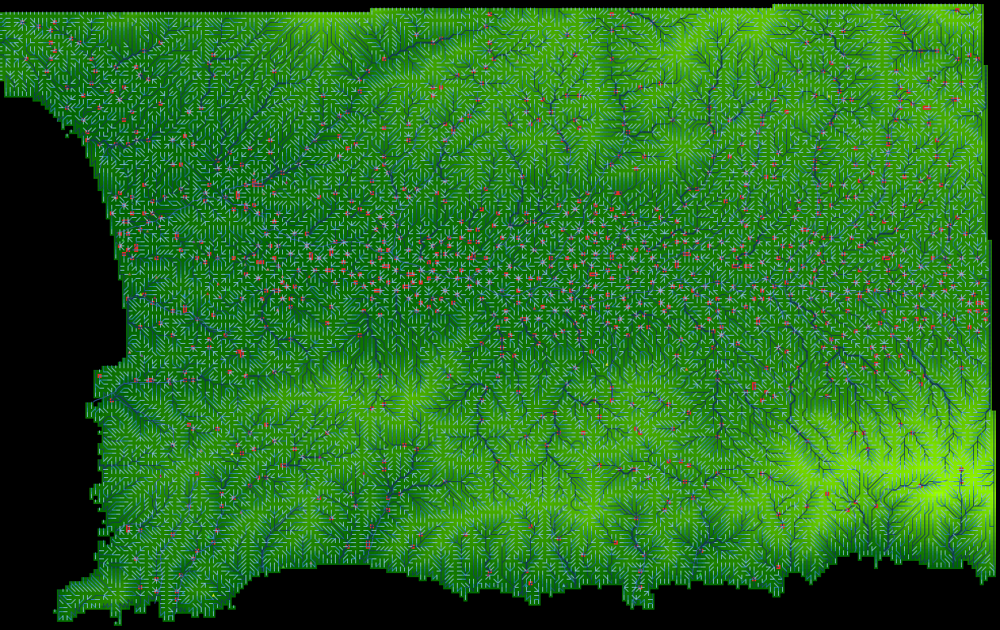
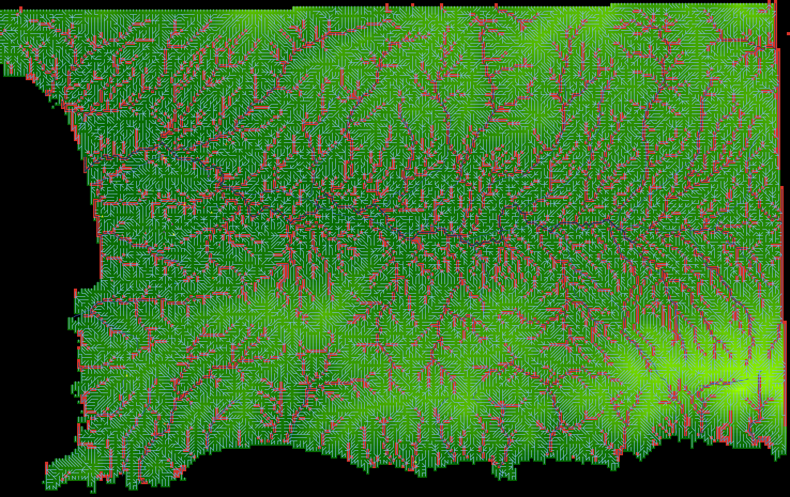

25 Calculating water flow accumulation
25.1 Water flow algorithm
Towards our calculation of land productivity, we advance using our GIS data in combination with parts of the Land submodel in the Indus Village model (Angourakis 2021). Our objective in this step is to reach a flow accumulation value for each patch according to their relative elevation within the terrain. This will serve as a proxy of the region hydrology beyond the data we have on rivers.
The submodel is based on the algorithm described in Jenson & Domingue (1988) through the implementation used by Huang & Lee (2015).
Jenson, S. K., and J. O. Domingue. 1988. ‘Extracting Topographic Structure from Digital Elevation Data for Geographic Information System Analysis’. Photogrammetric Engineering and Remote Sensing 54 (11): 1593–1600.
Huang, Pin Chun, and Kwan Tun Lee. 2015. ‘A Simple Depression-Filling Method for Raster and Irregular Elevation Datasets’. Journal of Earth System Science 124 (8): 1653–65. https://doi.org/10.1007/s12040-015-0641-2.
25.2 Adding the main procedures
The algorithm uses a numeric codification of the eight neighbour directions and a tag that classifies patches as “start”, “pending”, “done”, progressively converting the formers into the latter. Patches on the edge of the map are directed automatically towards the outside. Because this is an significant piece of code based on a specific reference, we will enclose all related procedures within a especial commentary note:
globals
[
...
;;; variables
maxFlowAccumulation
]
...
patches-own
[
elevation ; elevation above sea level [m]
flow_direction ; the numeric code for the (main) direction of flow or
; drainage within the land unit.
; Following Jenson & Domingue (1988) convention:
; NW = 64, N = 128, NE = 1,
; W = 32, <CENTRE>, E = 2,
; SW = 16, S = 8, SE = 4
flow_receive ; Boolean variable stating whether or not the land unit receives
; the flow of a neighbour.
flow_accumulation ; the amount of flow units accumulated in the land unit.
; A Flow unit is the volume of runoff water flowing from one land unit
; to another (assumed constant and without losses).
flow_accumulationState ; the state of the land unit regarding the calculation of flow
; accumulation (auxiliary variable).
isRiver
]
...
;=======================================================================================================
;;; START of algorithms based on:
;;; Jenson, S. K., & Domingue, J. O. (1988).
;;; Extracting topographic structure from digital elevation data for geographic information system analysis.
;;; Photogrammetric engineering and remote sensing, 54(11), 1593-1600.
;;; ===BUT used elsewhere, such as in the algorithms based on:
;;; Huang, P., Lee, K.T. A simple depression-filling method for raster and irregular elevation datasets.
;;; J Earth Syst Sci 124, 1653–1665 (2015). https://doi.org/10.1007/s12040-015-0641-2
;=======================================================================================================
to-report get-drop-from [ aPatch ] ; ego = patch
; "Distance- weighted drop is calculated by subtracting the neighbor’s value from the center cell’s value
; and dividing by the distance from the center cell, √2 for a corner cell and one for a noncorner cell." (p. 1594)
report ([elevation] of aPatch - elevation) / (distance aPatch)
end
to-report is-at-edge ; ego = patch
report any? neighbors with [elevation = noElevationDataTag]
end
to-report has-flow-direction-code ; ego = patch
if (member? flow_direction [ 1 2 4 8 16 32 64 128 ]) [ report true ]
report false
end
to-report flow-direction-is [ centralPatch ]
if (flow_direction = get-flow-direction-encoding ([pxcor] of centralPatch - pxcor) ([pycor] of centralPatch - pycor))
[ report true ]
report false
end
to-report get-flow-direction-encoding [ x y ]
if (x = -1 and y = -1) [ report 16 ] ; Southwest
if (x = -1 and y = 0) [ report 32 ] ; West
if (x = -1 and y = 1) [ report 64 ] ; Northwest
if (x = 0 and y = -1) [ report 8 ] ; South
if (x = 0 and y = 1) [ report 128 ] ; North
if (x = 1 and y = -1) [ report 4 ] ; Southeast
if (x = 1 and y = 0) [ report 2 ] ; East
if (x = 1 and y = 1) [ report 1 ] ; Northeast
end
to-report get-patch-in-flow-direction [ neighborEncoding ] ; ego = patch
; 64 128 1
; 32 x 2
; 16 8 4
if (neighborEncoding = 16) [ report patch (pxcor - 1) (pycor - 1) ]
if (neighborEncoding = 32) [ report patch (pxcor - 1) (pycor) ]
if (neighborEncoding = 64) [ report patch (pxcor - 1) (pycor + 1) ]
if (neighborEncoding = 8) [ report patch (pxcor) (pycor - 1) ]
if (neighborEncoding = 128) [ report patch (pxcor) (pycor + 1) ]
if (neighborEncoding = 4) [ report patch (pxcor + 1) (pycor - 1) ]
if (neighborEncoding = 2) [ report patch (pxcor + 1) (pycor) ]
if (neighborEncoding = 1) [ report patch (pxcor + 1) (pycor + 1) ]
report nobody
end
to-report flow-direction-is-loop ; ego = patch
let thisPatch self
let dowstreamPatch get-patch-in-flow-direction flow_direction
;print (word "thisPatch: " thisPatch "dowstreamPatch: " dowstreamPatch)
if (dowstreamPatch != nobody)
[ report [flow-direction-is thisPatch] of dowstreamPatch ]
report false
end
to set-flow-directions
ask patchesWithElevationData
[
ifelse (is-at-edge)
[
ifelse ( pxcor = min-pxcor )
[ set flow_direction 32 ] ; west
[
ifelse ( pxcor = max-pxcor )
[ set flow_direction 2 ] ; east
[
ifelse ( pycor = min-pycor )
[ set flow_direction 8 ] ; south
[ set flow_direction 128 ] ; north
]
]
]
[
set-flow-direction
]
]
end
to set-flow-direction ; ego = patch
let thisPatch self
let downstreamPatch max-one-of neighbors with [elevation > noElevationDataTag] [get-drop-from thisPatch]
set flow_direction get-flow-direction-encoding ([pxcor] of downstreamPatch - pxcor) ([pycor] of downstreamPatch - pycor)
end
to set-flow-accumulations
; From Jenson, S. K., & Domingue, J. O. (1988), p. 1594
; "FLOW ACCUMULATION DATA SET
; The third procedure of the conditioning phase makes use of the flow direction data set to create the flow accumulation data set,
; where each cell is assigned a value equal to the number of cells that flow to it (O’Callaghan and Mark, 1984).
; Cells having a flow accumulation value of zero (to which no other cells flow) generally correspond to the pattern of ridges.
; Because all cells in a depressionless DEM have a path to the data set edge, the pattern formed by highlighting cells
; with values higher than some threshold delineates a fully connected drainage network."
; identify patches that receive flow and those that do not (this makes the next step much easier)
ask patchesWithElevationData
[
set flow_receive false
set flow_accumulationState "start"
;set pcolor red
]
ask patchesWithElevationData with [has-flow-direction-code]
[
let patchInFlowDirection get-patch-in-flow-direction flow_direction
if (patchInFlowDirection != nobody)
[
ask patchInFlowDirection
[
set flow_receive true
set flow_accumulationState "pending"
;set pcolor yellow
]
]
]
let maxIterations 100000 ; just as a safety measure, to avoid infinite loop
while [count patchesWithElevationData with [flow_accumulationState = "pending" and not flow-direction-is-loop] > 0 and maxIterations > 0 and count patchesWithElevationData with [flow_accumulationState = "start"] > 0 ]
[
ask one-of patchesWithElevationData with [flow_accumulationState = "start"]
[
let downstreamPatch get-patch-in-flow-direction flow_direction
let nextFlow_accumulation flow_accumulation + 1
set flow_accumulationState "done"
;set pcolor orange
if (downstreamPatch != nobody)
[
ask downstreamPatch
[
set flow_accumulation flow_accumulation + nextFlow_accumulation
if (count neighbors with [
elevation > noElevationDataTag and
get-patch-in-flow-direction flow_direction = downstreamPatch and
(flow_accumulationState = "pending" or flow_accumulationState = "start")
] = 0
)
[
set flow_accumulationState "start"
;set pcolor red
]
]
]
]
set maxIterations maxIterations - 1
]
end
;=======================================================================================================
;;; END of algorithms based on:
;;; Jenson, S. K., & Domingue, J. O. (1988).
;;; Extracting topographic structure from digital elevation data for geographic information system analysis.
;;; Photogrammetric engineering and remote sensing, 54(11), 1593-1600.
;;; ===BUT used in the algorithms based on:
;;; Huang P C and Lee K T 2015
;;; A simple depression-filling method for raster and irregular elevation datasets
;;; J. Earth Syst. Sci. 124 1653–65
;=======================================================================================================Outside this enclosed section, we add the two main procedures set-flow-directions and set-flow-accumulations inside a higher level setup-flows:
to setup-flows
fill-sinks
set-flow-directions
set-flow-accumulations
; set maximum flow accumulation as a reference
set maxFlowAccumulation max [flow_accumulation] of patchesWithElevationData
endWe add a last step to get maxFlowAccumulation, which we will need for scaling purposes.
25.3 Visualisation
As usual, we need to implement some extra code to be able to visualise the outcome. In this case, however, we would like to observe simultaneously flow direction, flow accumulation and elevation. For this, we will use an accessory agent type whose only function is representing the flow of patches on top of its colour.
breed [ flowHolders flowHolder ]
...
to display-flows
if (not any? flowHolders)
[
ask patchesWithElevationData [ sprout-flowHolders 1 [ set hidden? true ] ]
]
ifelse (show-flows)
[
ask patchesWithElevationData
[
let flow_directionHere flow_direction
let nextPatchInFlow get-patch-in-flow-direction flow_direction
if (not [((elevation <= 0) or (elevation >= 0))] of nextPatchInFlow) [ set nextPatchInFlow nobody ]
let flow_accumulationHere flow_accumulation
ask one-of flowHolders-here
[
ifelse (nextPatchInFlow != nobody)
[
if (link-with one-of [flowHolders-here] of nextPatchInFlow = nobody)
[ create-link-with one-of [flowHolders-here] of nextPatchInFlow ]
ask link-with one-of [flowHolders-here] of nextPatchInFlow
[
set hidden? false
let multiplier 1E100 ^ (1 - flow_accumulationHere / (max [flow_accumulation] of patchesWithElevationData)) / 1E100
set color 92 + (5 * multiplier)
set thickness 0.4 * ( 1 - ((color - 92) / 5))
]
]
[
set hidden? false
let multiplier 1E100 ^ (1 - flow_accumulationHere / (max [flow_accumulation] of patchesWithElevationData)) / 1E100
set color 92 + (5 * multiplier)
if (color <= 97) [ set shape "line half" ]
if (color < 95) [ set shape "line half 1" ]
if (color < 93) [ set shape "line half 2" ]
set heading get-angle-in-flow-direction flow_direction
]
]
]
]
[
ask flowHolders
[
set hidden? true
ask my-links [ set hidden? true ]
]
]
end
to-report get-angle-in-flow-direction [ neighborEncoding ]
; 64 128 1
; 32 x 2
; 16 8 4
if (neighborEncoding = 16) [ report 225 ]
if (neighborEncoding = 32) [ report 270 ]
if (neighborEncoding = 64) [ report 315 ]
if (neighborEncoding = 8) [ report 180 ]
if (neighborEncoding = 128) [ report 0 ]
if (neighborEncoding = 4) [ report 135 ]
if (neighborEncoding = 2) [ report 90 ]
if (neighborEncoding = 1) [ report 45 ]
report nobody
endNow, press “setup”. The calculation of variables is made relatively fast, but displaying all flowHolders will take some time.

View of flow direction and accumulation, calculated with ‘flows’ module
25.4 Assessing fit
To better visualise how much flow_accumulation actually gets accumulated, let us run the following “highlight” command directly in the console:
ask patches with [flow_accumulation > 10] [ set pcolor red ]
Highlight of patches with flow accumulation greater than 10
Focus view on a sample of patches:
| | | | — | — | | patch 70 145 |  | | patch 179 69 |  | | patch 70 145 | | | patch 201 108 |  | | patch 125 99 |  | | patch 54 76 |  |
Our approximation of the region’s hydrological system is definitely not perfect. As a minimum, we want the main river, Lithaíos, to emerge, even if following an approximated path. The problem is most likely generated by our previous step: reducing the resolution of the original DEM. The height map we are using has many “sinks” in it (i.e., patches not at the edge with the lowest elevation among its neighbours).
Worse, it might be that the roughness of the terrain escapes even the lowest of the resolutions treatable at this scale, to a point where the pathways of rivers cannot be retraced using height maps. Let us work with the first hypothesis and address the sinks in our processed height map.
25.5 Improving fit with fill-sink
Our result could be improved by using the fill-sink procedure in the original Land model implementation (see code in the Indus Village repository), which is based on Huang & Lee (2015).
This procedure fills up the elevation of “sink” patches so flow can continue moving, until it reaches the edge of the map.
First, we can identify sink patches with the following procedure:
to-report is-sink ; ego = patch
let thisPatch self
report (not is-at-edge) and (elevation <= min [elevation] of neighbors with [((elevation <= 0) or (elevation >= 0))])
endWe then used it together with our previous “highlight” command in the console:
ask patches with [is-sink] [ set pcolor red ]
Highlight of sink patches
We then implement the fill-sinks algorithm:
to fill-sinks
while [ count patchesWithElevationData with [is-sink] > 0 ]
[
ask patchesWithElevationData with [is-sink]
[
set elevation [elevation] of min-one-of neighbors [elevation] + 1E-1
]
]
endAfter running setup again, we obtain a much better result. We can now clearly identify what should be the Lithaíos river and its path is not too far from our original river data.
View of flow direction and accumulation, calculated with ‘flows’ module with the fill-sinks procedure

Highlight of patches with flow accumulation greater than 10, after we include the fill-sinks procedure
We should remember that this algorithm modifies our original DEM heightmap and costs more computation resources/time.
25.6 Implementing a feature to export and import world
We do not want to repeat this every time we initialise a simulation run. Therefore, we will export the entire map configuration to a file for later use. We do this quickly with “File > Export… > Export World” and selecting the data folder. We could write procedures specific for exporting (and importing) a subset of data. Still, this option is much faster, given that this is the initial spatial data we want for all further versions.
Still, if you need to do this several times and want to keep track of the directory and file you are using, you can add a button to the interface with the following code, which is equivalent to the built-in option in the menu:
export-world "data/terrainWithFlows/BlockC_module2_flows world.csv"The same can be done to import the same file. Inside a new button, add:
clear-all
import-world "data/terrainWithFlows/BlockC_module2_flows world.csv"Now, you should be able to export and import your map with flows.
See the fully implemented version of this module: BlockC_module2_flows.nlogo.
For the sake of this example, we will assume our approximation to be sufficient. Still, tackling this kind of problem exploring other solutions in your own time could be an excellent exercise for improving your skills.